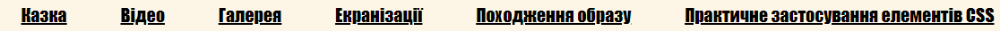
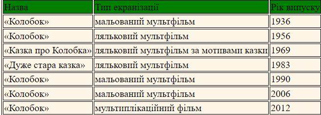

У цьому завданні я використовував такі стилі
Застосовано стиль для тегу body, який обмежує ширину частини сайту з інформацією, застосовує колір для заднього фону та вирівнює текст за лівою стороною
body {
width: 960px;
margin: 15px auto;
text-align: left;
background-color: #fdf5e6;
}
Наступні два стилі використовуються для того щоб footer знаходився внизу екрана
section {
min-height: calc(100vh - 150px);
}
footer {
height: 50px;
}
Стиль для тегу h1
h1
{
text-align: center;
font-family: Impact, fantasy;
}
Стиль для тегу h3
h3
{
text-align: center;
font-family: Comic Sans MS, Comic Sans, cursive;
}
Наступний стиль задає шрифт для меню навігації
nav
{
font-family: Impact, fantasy;
}
Стиль для тегу p визначає його шрифт
p
{
font-family: URW Chancery L, cursive;
}
Приклад стилю для тега p
Наступні два теги визначають стиль для ненумерованого списку та роблять його горизонтальним
ul
{
margin:0;
padding:0;
width: 100%;
}
li{
display: inline;
list-style: none;
padding: 20px;
margin-right: 5px;
}
Вигляд стилю для списку

Стилі нижче визначають вигляд таблиці
table, th, td {
border: 1px solid;
}
#tr_top
{
background-color: green;
}
a
{
color: black;
}

Вигляд таблиці